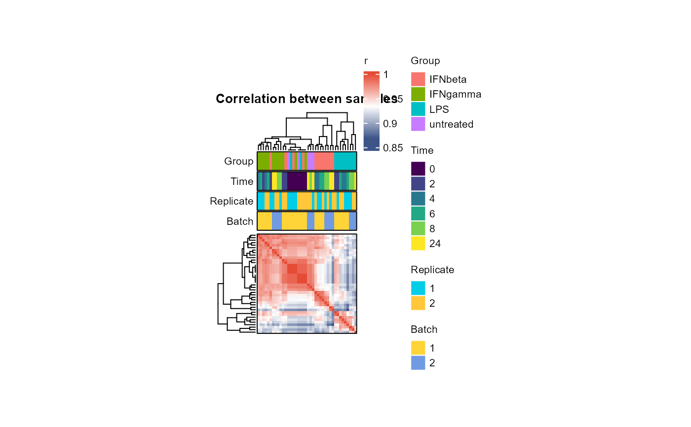

Plot correlation matrix between samples as a heatmap
Usage
plot_cor_matrix(
se_obj,
use = "pairwise.complete.obs",
method = c("spearman", "pearson", "kendall"),
label_group = TRUE,
label_time = TRUE,
label_rep = TRUE,
label_batch = TRUE,
show_rownames = FALSE,
show_colnames = FALSE,
fontsize = 8,
cellwidth = 1,
cellheight = 1,
title = "Correlation between samples",
...
)Arguments
- se_obj
A SummarizedExperiment object created by
create_input()- use
Parameter of
stats::cor()(default is "pairwise.complete.obs")- method
Parameter of
stats::cor()(default is "spearman")- label_group
Whether to label Group (default is TRUE)
- label_time
Whether to label Time (default is TRUE)
- label_rep
Whether to label Replicate (default is TRUE)
- label_batch
Whether to label Batch (default is TRUE)
- show_rownames
Whether to show row names in the heatmap (default is FALSE)
- show_colnames
Whether to show column names in the heatmap (default is FALSE)
- fontsize
Font size for the heatmap and annotations (default is 8)
- cellwidth
Cell width for the heatmap (default is 1)
- cellheight
Cell height for the heatmap (default is 1)
- title
Title of the heatmap (default is "Correlation between samples")
- ...
Additional arguments to be passed to
ComplexHeatmap::Heatmap()
Examples
data("example")
plot_cor_matrix(example_obj)
